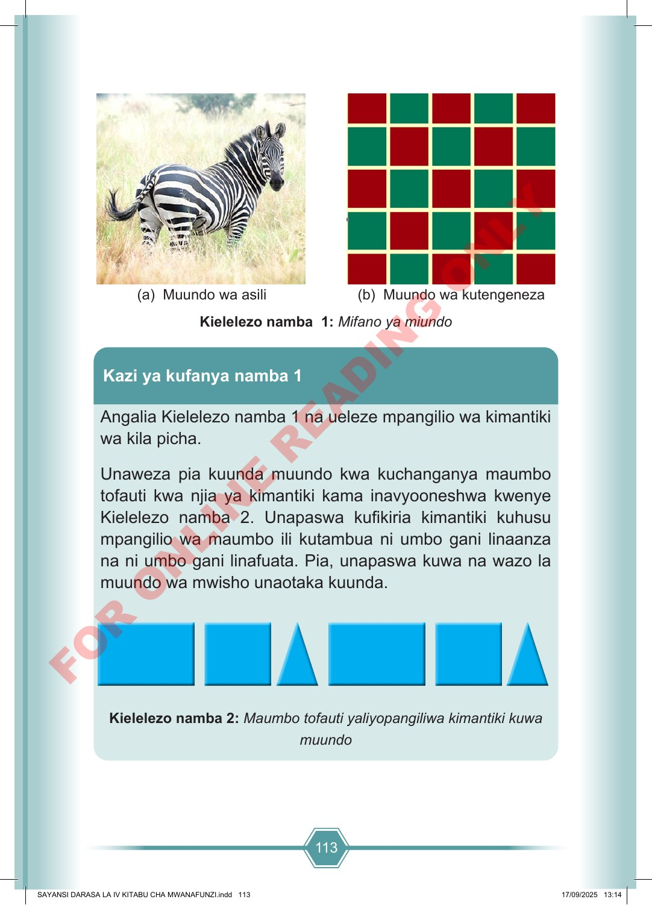

113 (a) Muundo wa asili (b) Muundo wa kutengeneza Kielelezo namba 1: Mifano ya miundo Angalia Kielelezo namba 1 na ueleze mpangilio wa kimantiki wa kila picha. Unaweza pia kuunda muundo kwa kuchanganya maumbo tofauti kwa njia ya kimantiki kama inavyooneshwa kwenye Kielelezo namba 2. Unapaswa kufikiria kimantiki kuhusu mpangilio wa maumbo ili kutambua ni umbo gani linaanza na ni umbo gani linafuata. Pia, unapaswa kuwa na wazo la muundo wa mwisho unaotaka kuunda. Kielelezo namba 2: Maumbo tofauti yaliyopangiliwa kimantiki kuwa muundo Kazi ya kufanya namba 1 SAYANSI DARASA LA IV KITABU CHA MWANAFUNZI.indd 113 SAYANSI DARASA LA IV KITABU CHA MWANAFUNZI.indd 113 17/09/2025 13:14 17/09/2025 13:14 F O R O N L I N E R E A D I N G O N L Y
(herufi A) Muundo wa asili (herufi B) Muundo wa kutengeneza Kielelezo namba moja: Mifano ya miundo Kazi ya kufanya namba moja Kielelezo namba mbili: Maumbo tofauti yaliyopangiliwa kimantiki kuwa muundo
Dokezo la ufikivu: mwanafunzi anayetumia kibodi au kisoma skrini anaweza kutumia Quorum kama programu fikivu mbadala, akiongozwa na mwalimu au mwezeshaji.
Maelezo fikivu ya Kielelezo namba 1: Kielelezo kinabainisha Mifano ya miundo Kazi ya kufanya namba 1 Kazi ya kufanya inaeleza kupanga maumbo kwa mpangilio wa kimantiki.
Maelezo fikivu ya Kielelezo namba 2: Kielelezo kinabainisha Maumbo tofauti yaliyopangiliwa kimantiki kuwa muundo (a) Muundo wa asili (b) Muundo wa kutengeneza Kielelezo namba 1: Mifano ya muundo Kazi ya kufanya namba 1 Kielelezo namba 2: Ma.